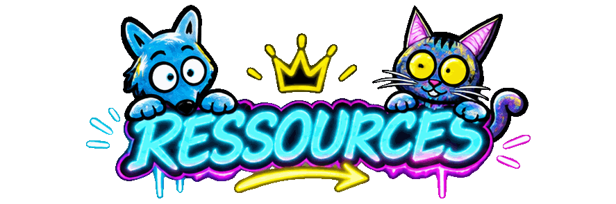
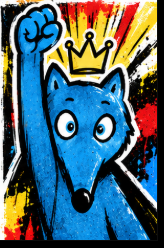

Petit lecteur
20 petites histoires : une ou deux phrases, une question à la fois.
COMMENCER →

Les activités du moment à retrouver en un clic.
 Capitaines !Découvre la bande-annonce du premier film▶ VOIR LA BANDE-ANNONCE →
🎵 MUSIQUE · LES ENFANTASTIQUESC’est de l’eau 💧Regarde la vidéo et chante avec les paroles affichéesCHANTER →
\n🔢 MATHÉMATIQUES · M6Fractions décimalesSix ateliers interactifs : dixièmes, centièmes, décompositions et problèmesS’ENTRAÎNER →
🔎 LECTURE COMPRÉHENSIONÀ chacun son parcours de lectureTrois paliers et cinq ateliers pour apprendre à mieux comprendreEXPLORER →
🌍 MYSTÈRES DU MONDEExplore les destinationsIslande, Sahara, Japon, Amazonie, Barrière de corail, Pompéi, Gizeh, Russie, Inde et Mongolie : retrouve les découvertes de la classeEXPLORER →
🌍 GÉOGRAPHIE · GÉO 2Villes et reliefs de FrancePlace les grandes villes et les massifs montagneux sur la carteJOUER →
Capitaines !Découvre la bande-annonce du premier film▶ VOIR LA BANDE-ANNONCE →
🎵 MUSIQUE · LES ENFANTASTIQUESC’est de l’eau 💧Regarde la vidéo et chante avec les paroles affichéesCHANTER →
\n🔢 MATHÉMATIQUES · M6Fractions décimalesSix ateliers interactifs : dixièmes, centièmes, décompositions et problèmesS’ENTRAÎNER →
🔎 LECTURE COMPRÉHENSIONÀ chacun son parcours de lectureTrois paliers et cinq ateliers pour apprendre à mieux comprendreEXPLORER →
🌍 MYSTÈRES DU MONDEExplore les destinationsIslande, Sahara, Japon, Amazonie, Barrière de corail, Pompéi, Gizeh, Russie, Inde et Mongolie : retrouve les découvertes de la classeEXPLORER →
🌍 GÉOGRAPHIE · GÉO 2Villes et reliefs de FrancePlace les grandes villes et les massifs montagneux sur la carteJOUER →
Un défi de logique à relever !
Choisis une rubrique pour retrouver les leçons et les jeux.
Choisis ton parcours ou entraîne une stratégie dans les ateliers.
VOIR LES PARCOURS ET LES ATELIERS →20 petites histoires : une ou deux phrases, une question à la fois.
COMMENCER →30 défis pour relier les indices et justifier ses réponses.
EXPLORER →Six œuvres et dix-huit défis de compréhension littéraire.
OUVRIR UN LIVRE →Cinq stratégies : je découvre, je m’entraîne, je réutilise.
M’ENTRAÎNER →Lire, observer et comprendre le poème illustré.
DÉCOUVRIR →
Dictées et histoire des arts – Voyage dans le temps, cycle 3, Mélanie Pouëssel, Éditions Retz.
Observe de vraies photographies de monuments et repère les indices architecturaux.
JOUER →Accorder noms et adjectifs au pluriel.
JOUER →Écrire correctement les nombres en toutes lettres.
JOUER →Choisir entre s et ss.
JOUER →Retrouver le vrai sujet et accorder le verbe dans les phrases pièges.
JOUER →Choisir le bon homophone, tester les remplacements et se corriger.
JOUER →20 défis progressifs, exceptions et définitions illustrées des mots difficiles.
JOUER →Classe les mots selon leur nature, en entraînement libre ou avec un code de séance.
JOUER →Analyse chaque mot, retrouve sa nature et demande les indices du loup bleu. Couleurs, abréviations et défis.
JOUER →Reconnaître les noms, noms propres, noms communs et adjectifs.
OUVRIR →Repérer le groupe sujet, le groupe verbal, les sujets inversés et la nature du sujet.
S’ENTRAÎNER →Ajouter des adjectifs et des compléments du nom dans des phrases entières, puis les transformer.
S’ENTRAÎNER →Reconnais les verbes, trouve leur groupe ou relève les défis du dojo.
CHOISIR UN JEU →Transforme les textes : présent, imparfait et changements de personne.
JOUER →Retrouve les mots d’une même famille parmi huit propositions. Douze défis avec correction immédiate.
JOUER →Jules Ferry, l’école gratuite, l’instruction obligatoire et la laïcité. Découvre la leçon puis vérifie chaque exercice séparément.
DÉCOUVRIR ET S’ENTRAÎNER →Cinq missions pour réviser les personnages, les régimes, les révolutions et les dates de 1815 à 1871. Correction immédiate et score final.
RELEVER LE DÉFI →Revoir Louis XVIII, Charles X et Louis-Philippe, mémoriser la leçon et réussir le défi final.
RÉVISER →La IIe République, Napoléon III, Sedan et la Commune de Paris en six cases de BD et des exercices interactifs.
RÉVISER →Découvre les cinq grandes périodes de l’histoire.
RÉVISER →Découvrir comment les Romains écrivaient les nombres, puis déchiffrer des inscriptions.
JOUER →Explore la première partie du XIXe siècle : clique sur les personnages et les événements pour découvrir leur histoire.
EXPLORER LA FRISE →
Une méthode d’anglais fondée sur des saynètes et des jeux, cycle 3, de Sylvie Hanot et Christine Hanot. Écouter, répéter, mémoriser avec les flashcards, puis comprendre et jouer les dialogues des BD.
Illustration : couverture du cahier de la méthode fourni à la classe (ce visuel n’est pas la couverture du livre). Ces ressources accompagnent une utilisation dans le cadre de notre classe uniquement ; les documents des autrices ne sont pas libres de diffusion. Site des autrices ↗Retrouve les 22 leçons et, pour chacune, ses accès aux jeux, à la BD et à la BD sonorisée lorsque celle-ci est disponible.
VOIR LES 22 LEÇONS →Associe les nombres, écoute-les et entraîne-toi à compter jusqu’à 100 et au-delà.
JOUER DIRECTEMENT →Capitaines !, Dounia et la princesse d’Alep et La Petite Vendeuse de soleil
DÉCOUVRIR LES FILMS →Exprimer un désaccord sans blesser, écouter l’autre et chercher une solution.
DÉCOUVRIR & JOUER →Repère les pays qui partagent une frontière terrestre avec la France métropolitaine. Jeu France, PACA et Vaucluse.
JOUER →Associe 8 grandes villes aux points de la carte et 6 massifs, dont les Cévennes, à leurs zones.
S’ENTRAÎNER →Révise les villes en croissance et en déclin, les migrations et les raisons de l’attractivité.
RÉVISER →Yannick Noah · Entraîne-toi à chanter avec la version karaoké et ses paroles affichées pendant la musique.
CHANTER EN KARAOKÉ ↗ ÉCOUTER LE CHANT ORIGINAL ↗Écoute, compréhension, chant collectif et préservation de l'eau.
DÉCOUVRIR LE CHANT →